01 / CAMPO
O atendimento
vem primeiro.
App com registro local e fila de sincronização. A ocorrência organiza o contexto; cada vítima tem sua própria ficha.
Tecnologia para o resgate pré-hospitalar
O registro acompanha o atendimento. O painel reúne o contexto. Conheça o SFR Resgate Digital, da ocorrência à documentação.
App com registro local e fila de sincronização. A ocorrência organiza o contexto; cada vítima tem sua própria ficha.
Indicadores, lista de ocorrências e estado da sincronização no painel. Filtros aproximam a visão da sua operação.
Prontuário em PDF, acompanhamento de entregas e trilha de auditoria conectam o registro às próximas etapas.
Da primeira ação à ficha da vítima. Explore a navegação do app em três momentos do atendimento.
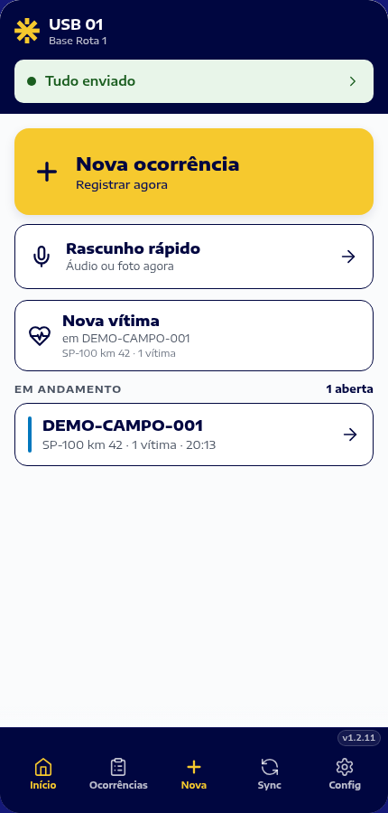
APP / INÍCIOInicie uma ocorrência ou retome o atendimento em andamento. O estado de sincronização aparece no início.
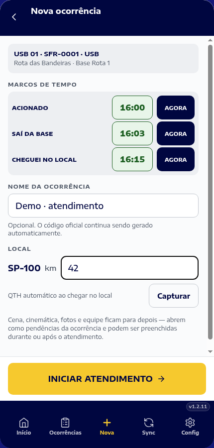
APP / OCORRÊNCIAA viatura, os marcos de tempo e o local dão início ao registro do atendimento.
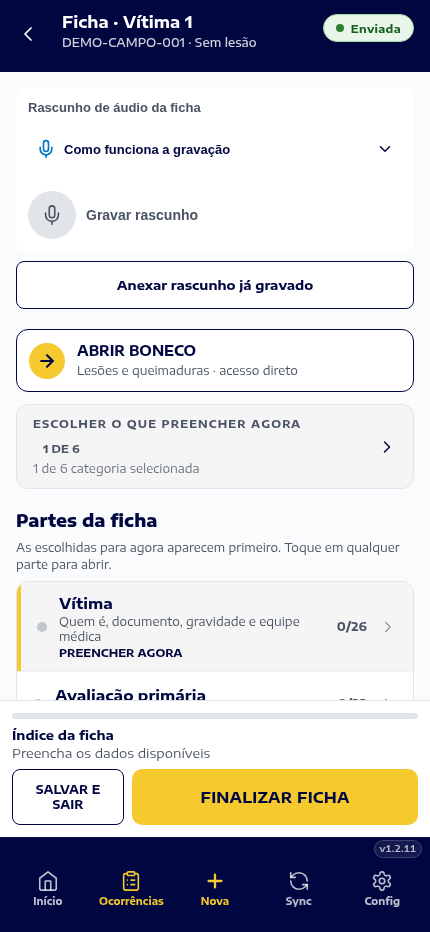
APP / FICHA DA VÍTIMAAcesse os registros de cada atendimento dentro do contexto da ocorrência.
Versão web do app em execução local. Telas reais, dados fictícios. Escopo da demonstração.
Reúna equipe, viatura e informações do local.
Mantenha a ficha de cada vítima vinculada à ocorrência.
Consulte os registros, os documentos e o estado da sincronização.
Ocorrências, vítimas atendidas e tempos operacionais dividem a tela com os gráficos e o estado da sincronização.
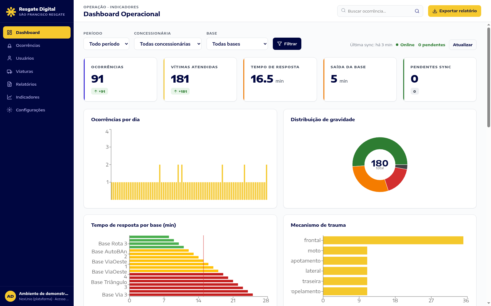
A lista conecta a visão da operação ao detalhe de cada ocorrência. Equipe, viatura e contexto permanecem associados ao registro.
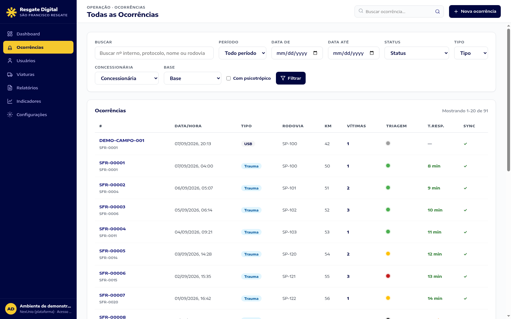
Uma ocorrência pode reunir várias vítimas. Cada ficha mantém seus registros próprios, com acesso à documentação do atendimento.
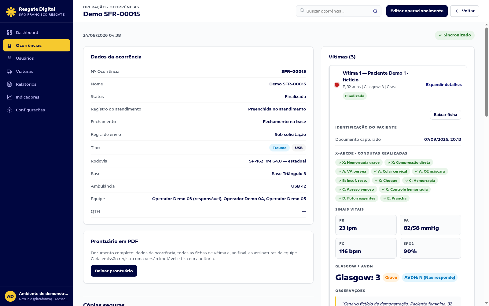
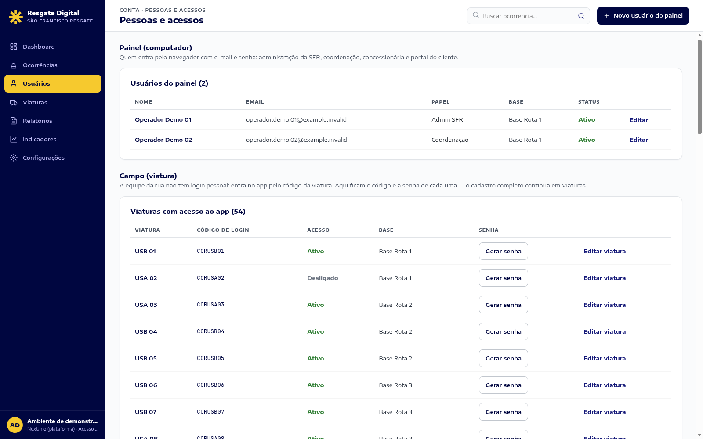
Consulte usuários do painel, seus papéis e situações. A administração organiza os acessos da operação.
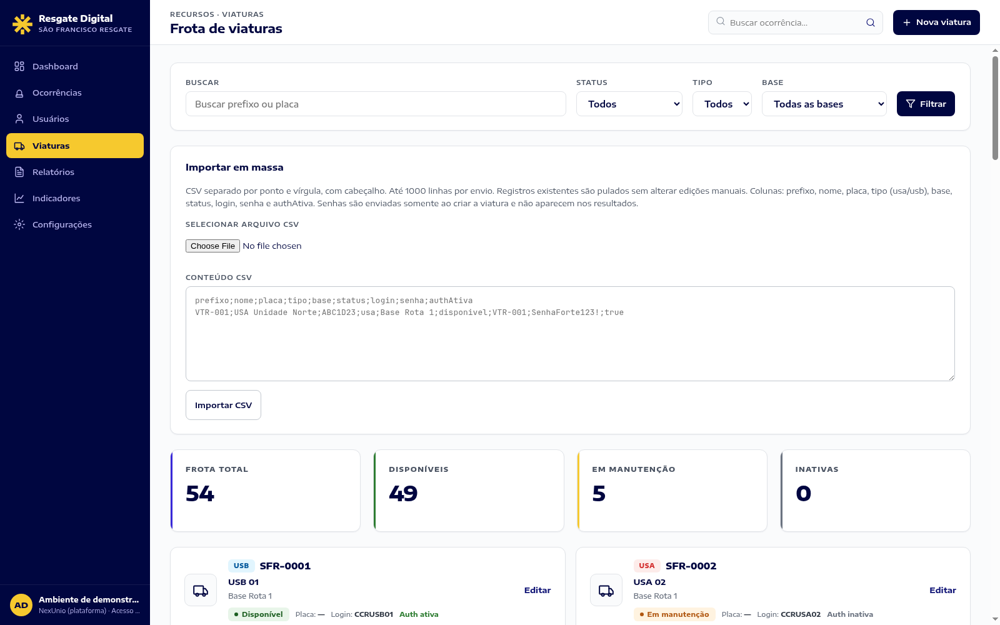
Consulte as viaturas e seus cadastros. O veículo usado pela equipe compõe a identificação da ocorrência.
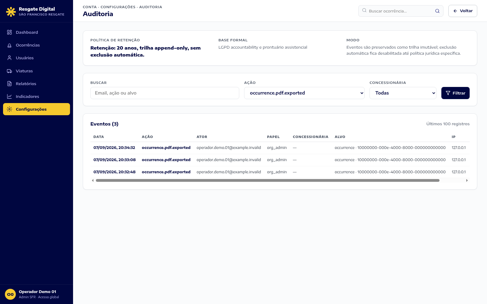
Consulte eventos e ações registrados pelo sistema, com filtros de busca e acesso conforme as permissões do perfil.
Consulte o resumo da operação por concessionária e período. Os relatórios reúnem indicadores e opções de exportação.
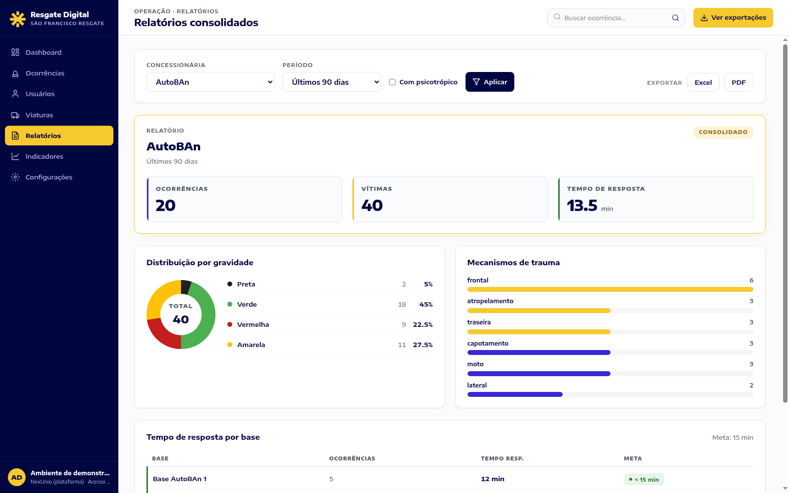
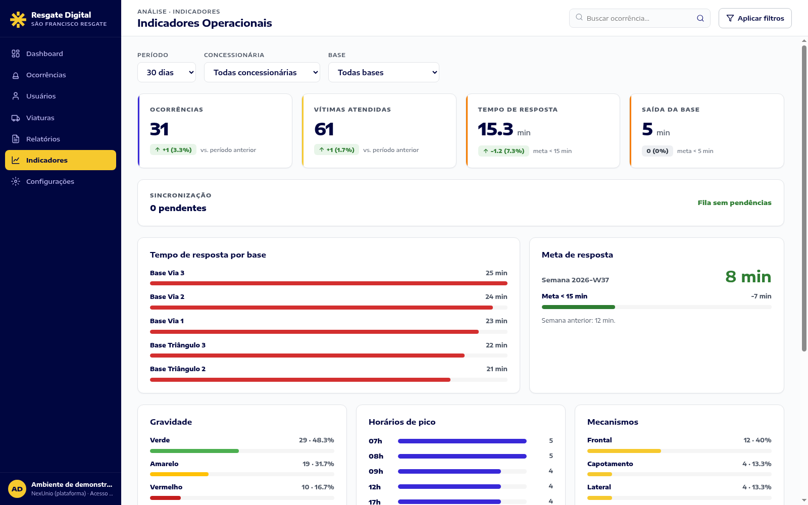
Analise os indicadores com filtros de período, concessionária e base, conforme o acesso do seu perfil.
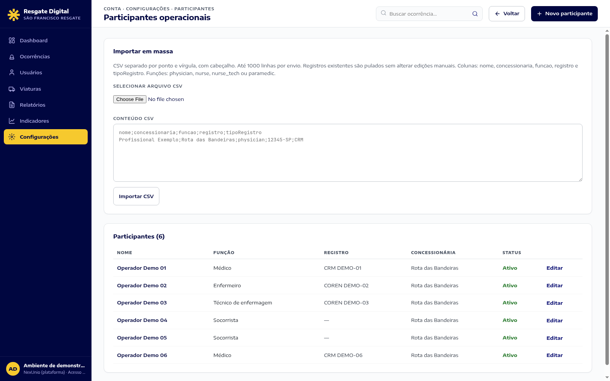
Cadastro dos participantes da equipe, com função e situação. A estrutura do atendimento começa antes da ocorrência.
O app apoia o registro no atendimento. O painel amplia a visão e organiza o acompanhamento.
| Etapa | App em campo | Painel de gestão |
|---|---|---|
| Ocorrência | Criação com viatura e contexto; equipe vinculada à ocorrência. | Consulta, filtros e visualização do detalhe. |
| Ficha | Registro individual de cada vítima, vinculado à ocorrência. | Revisão das fichas e acesso aos documentos em PDF. |
| Conexão | Registro local e fila de sincronização após a configuração inicial com internet. | Estado dos registros recebidos e pendências de sincronização. |
| Continuidade | Pedido de cópia dos documentos no fluxo de atendimento. | Acompanhamento de entregas, cadastros e auditoria. |
Comparação das funções do próprio SFR, conferida no código em 07/09/2026. O vídeo mostra o painel e a versão web do app em execução local; recursos nativos e envio externo não fazem parte desta demonstração. Fontes e escopo.
Duração medida: 75,03 segundos, com sete cenas narradas em português.
Três telas do app na versão web e nove telas do painel, em execução local.
Produto em execução local, com narração em português e dados fictícios.
O acesso ao painel e a instalação nos aparelhos são orientados pela organização responsável pela operação.
Solicite ao administrador da sua organização o endereço do painel e o perfil adequado à sua função.
Use nos aparelhos a versão do aplicativo distribuída pela sua organização.
Entre e assuma uma viatura uma vez para estabelecer o contexto operacional usado no registro offline.
Conteúdo conferido em no código do SFR Resgate Digital, revisão de referência 575ea7ea. Os números descrevem a mídia desta apresentação; não são métricas de desempenho ou de operação em produção.
Fontes locais: README.md (app e painel); apps/web/src/app/dashboard/page.tsx (cinco indicadores e filtros); apps/web/src/app/ocorrencias/[id]/page.tsx (fichas e PDF); páginas de participantes, viaturas e auditoria; apps/mobile/src/acesso-da-ambulancia/offline-session-policy.ts (contexto inicial com internet).
As imagens e o vídeo são de uma instância local isolada com dados fictícios. A demonstração não comprova câmera, microfone, localização, armazenamento nativo, entrega de e-mail externo ou desempenho em produção. Consultar o registro completo de fontes · Ler a narração.